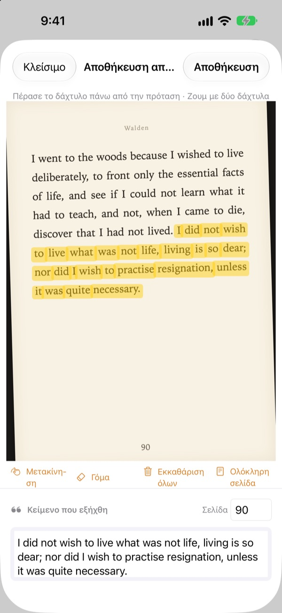
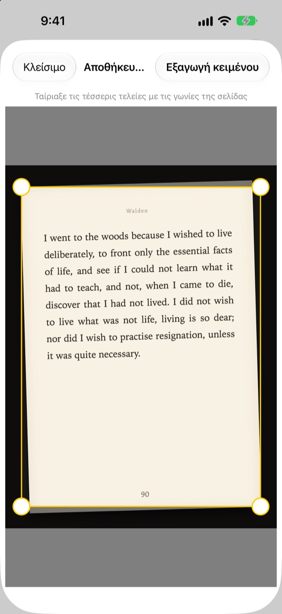
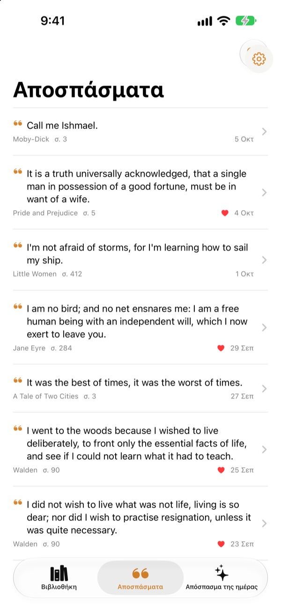
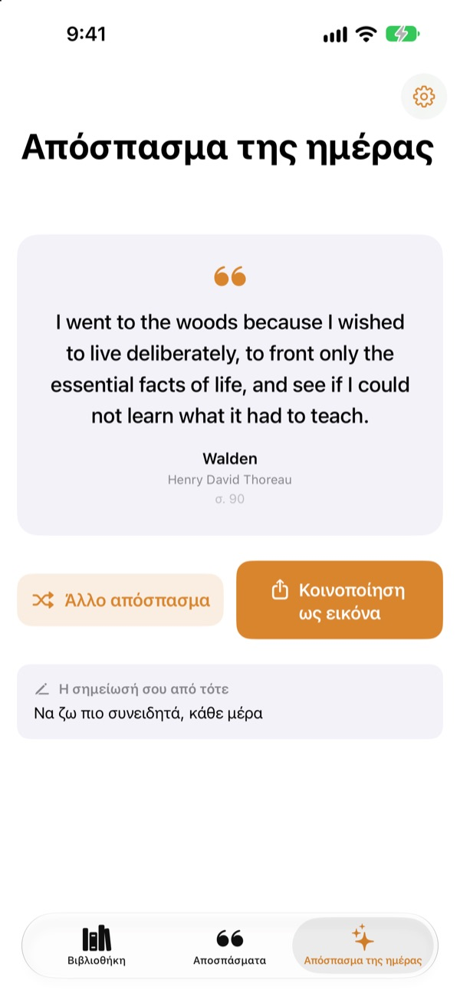

Υπογράμμισε το βιβλίο
χωρίς στυλό
Φωτογράφισε τη σελίδα, πέρασε το δάχτυλο πάνω από τη φράση που σου αρέσει, και μόνο αυτή αποθηκεύεται ως κείμενο. Το βιβλίο και ο αριθμός σελίδας έρχονται μαζί.
Όλες οι λειτουργίες είναι δωρεάν, χωρίς διαφημίσεις.

Δοκίμασέ το
Πέρασε το δάχτυλο ή το ποντίκι πάνω από οποιαδήποτε φράση στη σελίδα παρακάτω. Στην κάρτα μπαίνουν μόνο οι λέξεις από τις οποίες περνάς.
Πού καταλήγουν οι ωραίες φράσεις;
Το βιβλίο είναι από τη βιβλιοθήκη, άρα δεν γράφεις πάνω του. Η φωτογραφία της σελίδας χάνεται ανάμεσα σε χιλιάδες άλλες στη φωτοθήκη. Αν την πληκτρολογήσεις σε μια εφαρμογή σημειώσεων, ο τίτλος και η σελίδα σπάνια ακολουθούν. Το Bookmark Shot κρατά τη φράση, το βιβλίο και τη σελίδα με δύο κινήσεις: φωτογραφία και ένα πέρασμα του δαχτύλου.
Στραβή φωτογραφία, ίσια σελίδα
Μετά τη φωτογραφία, ταίριαξε τις τέσσερις γωνίες και ακόμη και μια σελίδα τραβηγμένη λοξά ισιώνει σαν φύλλο χαρτιού. Πιο καθαρά γράμματα σημαίνουν καλύτερη αναγνώριση.
Κάνουν και οι φωτογραφίες που έχεις ήδη στη φωτοθήκη.

Όλα τα αποσπάσματα σε ένα μέρος
Τα βιβλία σου μπαίνουν σε μια βιβλιοθήκη με εξώφυλλα και τα αποσπάσματα μαζεύονται σε μία λίστα. Ψάξε με τη φράση, τη σημείωση ή τον τίτλο και βάλε καρδιά σε όσα θέλεις να ξαναδιαβάσεις.
Πρόσθεσε ένα βιβλίο με μία φωτογραφία του εξωφύλλου. Ο τίτλος και ο συγγραφέας διαβάζονται για σένα, και το ISBN επίσης, αν φαίνεται ο γραμμωτός κώδικας στο οπισθόφυλλο.

Ξαναβρές φράσεις που είχες ξεχάσει
Το απόσπασμα της ημέρας σού φέρνει κάθε μέρα πίσω ένα από τα αποθηκευμένα αποσπάσματα, μαζί με τη σημείωση που είχες αφήσει. Κράτα το στην οθόνη Αφετηρίας ή στην οθόνη κλειδώματος με ένα γραφικό στοιχείο.
Σου αρέσει; Κάν’ το κάρτα με όψη χαρτιού και μοιράσου την.

Ξεκίνα σε τρία βήματα
- 1
Φωτογράφισε το εξώφυλλο
Ο τίτλος και ο συγγραφέας συμπληρώνονται. Μπορείς να τα αλλάξεις πριν την αποθήκευση.
- 2
Φωτογράφισε τη σελίδα
Ταίριαξε τις τέσσερις γωνίες και ισιώνει.
- 3
Πέρασε πάνω από τη φράση
Ο αριθμός σελίδας εντοπίζεται και αποθηκεύεται μαζί της.
Εργαλεία της οθόνης υπογράμμισης
- Πέρασμα δαχτύλου
- επιλέγει μόνο τις λέξεις από τις οποίες περνάς
- Τσίμπημα
- μεγεθύνει για πιο ακριβή επιλογή
- Μετακίνηση
- σέρνει τη μεγεθυμένη σελίδα
- Γόμα
- αφαιρεί λέξεις που επέλεξες
- Εκκαθάριση όλων
- αφαιρεί όλες τις επιλεγμένες λέξεις
- Ολόκληρη σελίδα
- κρατά όλο το κείμενο της σελίδας
- Πεδίο σελίδας
- ο αριθμός σελίδας που βρέθηκε, με δυνατότητα αλλαγής
Με το VoiceOver, άγγιξε δύο φορές μια γραμμή για να την προσθέσεις ή να την αφαιρέσεις.
Όλες οι λειτουργίες δωρεάν
Δωρεάν
- Προσθήκη βιβλίων από το εξώφυλλο, ISBN από τον γραμμωτό κώδικα
- Ίσιωμα σελίδας και υπογράμμιση με το δάχτυλο
- Αυτόματος αριθμός σελίδας
- Βιβλιοθήκη, αναζήτηση αποσπασμάτων και αγαπημένα
- Το απόσπασμα της ημέρας με γραφικά στοιχεία για την οθόνη Αφετηρίας και την οθόνη κλειδώματος
- Κοινοποίηση ως κάρτα
- Συγχρονισμός μέσω iCloud
Στήριξε τον δημιουργό
- Αν θέλεις, άφησε ένα μικρό φιλοδώρημα από τις Ρυθμίσεις
- Το φιλοδώρημα δεν ξεκλειδώνει τίποτα. Η εφαρμογή μένει ίδια
Χωρίς διαφημίσεις, χωρίς συνδρομή.
Ερωτήσεις
Στέλνονται κάπου οι φωτογραφίες ή τα αποσπάσματά μου;
Όχι. Η αναγνώριση κειμένου γίνεται εξ ολοκλήρου στη συσκευή σου με το Apple Vision και οι φωτογραφίες και τα αποσπάσματά σου δεν πηγαίνουν ποτέ σε διακομιστή. Λειτουργεί και χωρίς σύνδεση. Για λεπτομέρειες, δες την Πολιτική απορρήτου παρακάτω.
Ποιες γλώσσες μπορεί να διαβάσει;
Την αναγνώριση κειμένου την κάνει το iOS στη συσκευή σου. Διαβάζει βιβλία στα κορεατικά, αγγλικά, ιαπωνικά, κινεζικά, ρωσικά και στις περισσότερες δυτικοευρωπαϊκές γλώσσες, ενώ στις νεότερες εκδόσεις του iOS και στα ταϊλανδικά, βιετναμικά, τουρκικά, ινδονησιακά, πολωνικά, τσεχικά, ολλανδικά και τις σκανδιναβικές γλώσσες. Τα ελληνικά δεν αναγνωρίζονται ακόμη.
Πώς επιλέγω μόνο τη φράση που θέλω;
Αφού φωτογραφίσεις τη σελίδα, πέρασε το δάχτυλο πάνω από τη φράση σαν να χρησιμοποιείς μαρκαδόρο, και επιλέγονται μόνο αυτές οι λέξεις. Κάνε ζουμ με δύο δάχτυλα για μεγαλύτερη ακρίβεια. Υπάρχουν επίσης η γόμα, η «Εκκαθάριση όλων» και η «Ολόκληρη σελίδα».
Ο τίτλος ή ο συγγραφέας βγήκε λάθος.
Η αναγνώριση του εξωφύλλου μαντεύει από το μέγεθος των γραμμάτων, γι’ αυτό σε πολύ διακοσμητικά εξώφυλλα μπορεί να κάνει λάθος. Μπορείς να διορθώσεις τον τίτλο και τον συγγραφέα πριν αποθηκεύσεις το βιβλίο.
Ο αριθμός σελίδας είναι λάθος.
Διαβάζεται από τους αριθμούς στην άκρη της φωτογραφίας. Απλώς διόρθωσέ τον στο πεδίο σελίδας πριν την αποθήκευση.
Μπορώ να βλέπω τα αποσπάσματά μου σε πολλές συσκευές;
Ναι. Αν έχεις συνδεθεί στο iCloud με τον ίδιο Λογαριασμό Apple και το iCloud Drive είναι ενεργό, τα βιβλία και τα αποσπάσματά σου συγχρονίζονται αυτόματα.
Πώς προσθέτω το γραφικό στοιχείο;
Άγγιξε παρατεταμένα την οθόνη Αφετηρίας, πάτησε Επεξεργασία > Προσθήκη γραφικού στοιχείου και διάλεξε το Bookmark Shot. Για την οθόνη κλειδώματος, άγγιξέ την παρατεταμένα και πάτησε Προσαρμογή. Εκεί εμφανίζεται το απόσπασμα της ημέρας.
Η κάμερα δεν λειτουργεί.
Έλεγξε στις Ρυθμίσεις > Bookmark Shot ότι επιτρέπεται η πρόσβαση στην κάμερα και στις φωτογραφίες. Για τη λήψη φωτογραφιών χρειάζεσαι πραγματικό iPhone.
Τι χρειάζομαι;
Ένα iPhone με iOS 17.0 ή νεότερο.
Πώς επικοινωνώ μαζί σας;
Στείλε σχόλια από την οθόνη Ρυθμίσεων της εφαρμογής (το γρανάζι) ή γράψε μας στη διεύθυνση παρακάτω. Συνήθως απαντάμε μέσα σε δύο με τρεις μέρες.
Ερωτήσεις ή σχόλια; Γράψε στο leeo@kakao.com.